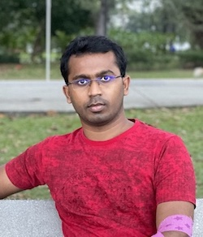

Frontend platforms
High-performance applications, scalable design systems, and distributed frontend architecture for complex enterprise products.
Senior Software Engineer · Singapore
I'm Muthukumar — a frontend and AI systems engineer with 15 years of experience turning complex ideas into scalable platforms, intelligent workflows, and developer tools.

01 / Expertise
I combine deep frontend foundations with practical AI engineering and platform thinking—so products are useful, maintainable, and ready for real users.
High-performance applications, scalable design systems, and distributed frontend architecture for complex enterprise products.
Planner–executor–verifier workflows with retrieval, memory, tools, observability, and human confirmation built in.
Specification-driven workflows, automation tools, browser extensions, and feedback loops that help teams ship with confidence.
02 / Selected work
A selection of platforms and experiments spanning AI orchestration, browser tooling, cloud discovery, and delivery intelligence.
A full workflow system with planning, execution, verification, RAG, memory, MCP tools, human approvals, and live state streaming.
AI PLATFORMA browser extension that captures multiple screen regions and combines them into a clean, shareable PDF.
BROWSER TOOLA developer-focused browser extension for tracking pending and completed Fetch and XHR network activity.
DEVTOOLSA browser extension for inspecting, overriding, and reusing API responses and headers during frontend development.
DEVTOOLSAn Android habit tracker for building lasting routines—mark habits done, failed, or skipped, organize custom groups, search quickly, and keep your data stored locally with a focused dark-mode experience.
ANDROID APPA searchable Next.js interface for discovering AWS services by name, category, and service tags.
CLOUD TOOL03 / Experience
From telecom and banking to edge platforms and AI-ready engineering, each chapter adds another layer to how I design systems.
Building the Dell Automation Platform for NativeEdge, React and Redux microfrontends, agentic workflows, and RAG pipelines in an AI-ready engineering team.
Delivered high-traffic shop, fibre, insurance, and customer platforms using React, Next.js, Gatsby, AEM, AWS, and microfrontends.
Led frontend delivery for an AEM insurance platform and built reusable Vue 3, Vuex, TypeScript, Tailwind CSS, and Java applications.
Built secure Angular and NgRx banking and portfolio-management applications for Standard Chartered Private Bank.
Created telecom monitoring dashboards and an internal Java automation tool that reduced repetitive operational work.
04 / Technology
Broad enough to connect the architecture; deep enough to make the implementation count.
05 / Connect
I'm always interested in ambitious engineering problems, strong teams, and conversations about where software development is heading next.